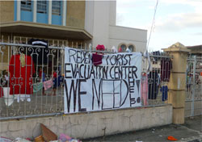
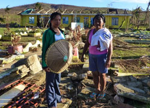
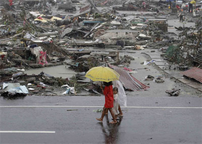
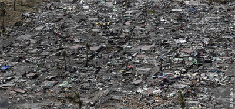

|
Mittwoch, 20. November 2013 |
Spenden-Aktion für die Menschen auf den Philippinen |
Die Arbeitsgruppe aus Mittelbaden gehört zu den agilsten des Kinderhilfswerks Terre des Hommes im gesamten Bundesgebiet. Vor acht Jahren hatten die AG-Mitglieder mit zahlreichen Partnern und Firmen nach der damaligen Flutkatastrophe in Südostasien mehrere 10 000 Euro an Spenden in den Krisengebieten einsetzen können. Auch nach dem Erdbeben auf Haiti vor drei Jahren war das Engagement groß.
„Viele Firmen und private Spender aus Mittelbaden vertrauen den Einsatzkräften von Terre des Hommes“, so Heinz Wolf von der regionalen Arbeitsgruppe. Und so reagierte man auch nach dem Taifun „Haiyan“ auf den Philippinen schnell, nahm Kontakt mit den seit Jahren vor Ort arbeitenden Entwicklungshelfern auf und konnte somit auch eine schnelle Hilfe auf den Weg bringen. Mit Partnern in den Krisengebieten und Netzwerken vor Ort ermittelte Terre des Hommes den dringendsten Bedarf und leitete Projekte für Kinder und Familien in den betroffenen Gebieten der Inseln Leyte und Samar ein.
Immer wieder sind es Vereine, Gruppen und Firmen aus Mittelbaden, die sich nach einer derartigen Katastrophe einsetzen wollen und in der Arbeitsgruppe vor Ort einen verlässlichen Partner finden.
„Der Ideenreichtum bei bisherigen Aktionen war erstaunlich. Da spendeten Karnevalsvereine, Jugendgruppen, Firmen, Banken und Gastronomen“, erinnert sich Wolf. An Silvester wurde beispielsweise vielerorts Sekt verkauft, ein Großteil des Erlöses kam den Opfern des damaligen Tsunami zugute. Auf eine ähnliche Hilfsbereitschaft hofft Wolf mit seinen Mitstreitern auch nun. „Es fehlt an allem: Nahrung, Trinkwasser, Medikamente, Zelte, Sanitärversorgung“, erklärt ein Sprecher der Kinderhilfsorganisation. Nach den verheerenden Verwüstungen, die der Taifun hinterlassen hat, sind Millionen Menschen auf den Philippinen dringend auf Unterstützung angewiesen.
Ein „Bündnis Entwicklung“, zu dem auch Terre des Hommes gehört, stellte gleich nach dem Taifun mehr als 1,2 Millionen Euro zur Verfügung. „Neben der akuten Notversorgung kommt es nun vor allem darauf an, die Selbsthilfekräfte der Menschen vor Ort zu stärken und lokale Strukturen zu unterstützen“, erklärt Bündnis-Geschäftsführer Peter Mucke. Die Mitgliedsorganisationen Christoffel-Blindenmission, Kindernothilfe, Medico international, Misereor, Terre des Hommes und Welthungerhilfe arbeiten auf den Philippinen mit lokalen Partnerorganisationen zusammen, die gut vernetzt und im Umgang mit Katastrophen geschult sind.
In Tacloban auf Leyte hat ein Team einen umfassenden Katastropheneinsatz eingeleitet. Die Helfer verteilen Nothilfe-Pakete mit Trinkwasser, Reis, Konserven, Öl, Zucker, Gemüse und getrocknetem Fisch. Außerdem werden Antibiotika, schmerz- und fiebersenkende Mittel sowie Mittel zur Trinkwasserdesinfektion für die medizinischen Teams benötigt. „Unsere erfahrenen einheimischen Projektpartner vor Ort sind in der Lage, Hilfslieferungen unmittelbar und nachhaltig den Betroffenen zukommen zu lassen“, erklärt Heinz Wolf. Wer helfen wolle, könne dies alleine, mit einer Gruppe, einem Verein oder einer guten Idee ganz einfach tun. „Unsere Arbeitsgruppe hilft gerne.“
(Text: Thomas Riedinger, Badisches Tagblatt 16.11.2013)
Ständig aktualisierte Informationen über die Hilfe von terre des hommes finden Sie auf diesen Sonderseiten.
terre des hommes ist Mitglied im Bündnis Entwicklung Hilft und bittet dringend um Spenden für die Opfer des Taifuns:
Ihre Spende - Stichwort: "Taifun Philippinen"
Spendenkonto 700800700
Volksbank Osnabrück eG
BLZ 26590025
Spendenkonto 120 790
Sparkasse Baden-Baden / Gaggenau
BLZ 662 500 30
Spendenkonto 102 748 00
VoBa Baden-Baden / Rastatt
BLZ 662 900 00
Zur Online-Spende |
Donnerstag, 14. November 2013 |
Taifun auf den Philippinen
Medizinische Versorgung und Suppenküchen für Kinder |
Alberto Cacayan, Koordinator der terre des hommes-Programme in Südostasien, plant am Freitagmorgen gegen 3:00 Uhr in der vom Taifun Haiyan schwer verwüsteten Stadt Tacloban einzutreffen. Zuvor hat er in Manila Gespräche mit philippinischen Partnerorganisationen geführt, die selbst Hilfsgüter für die Betroffenen organisieren. Diese Hilfspakete sollen über Cebu, die Nachbarinsel der zerstörten Inseln Samar und Leyte, zu den Betroffenen gebracht werden. terre des hommes plant eine Zusammenarbeit mit der Medical Action Group (MAG), einem langjährigen terre des hommes-Partner, der auf Samar gute Kontakte hat und ein Netzwerk von rund 250 Ärzten, Gesundheitsfachkräften, Krankenschwestern und Psychologen mobilisieren kann. Am heutigen Donnerstag werden sich Ärzte der MAG in Samar einen Überblick über den dringendsten Bedarf an medizinischer Hilfe verschaffen und ab Freitag mit der medizinischen Versorgung der ersten 500 Familien, rund 2.500 Menschen, beginnen.
Daneben bereitet terre des hommes gemeinsam mit kirchlichen philippinischen Organisationen ein Programm zur Nahrungsmittelhilfe in Calbayog City vor, einer Stadt im Westen der Insel Samar. Besonders die Kinder sollen in zahlreichen kleinen und mobilen Ausgabestellen, vergleichbar den deutschen »Suppenküchen«, vor Ort auf der Straße mit Essen versorgt werden.
»Es ist überwältigend zu sehen, wie sehr sich unsere Kollegen aus unserem großen Netzwerk von Projektpartnern in Kambodscha, Indonesien, Vietnam und Thailand, aber auch aus den Philippinen selbst engagieren und ihrerseits Hilfe organisieren, die per Schiff auf dem Weg nach Leyte ist«, sagt Alberto Cacayan. »Aber auch am fünften Tag nach dem verheerenden Taifun läuft die Versorgung der Opfer erst schleppend an. Die örtlichen Behörden in Samar und Leyte sind völlig überfordert mit der Koordination, es herrschen Chaos, Plünderungen und Verzweiflung. Das ganze Ausmaß der Katastrophe wird erst nach und nach sichtbar. Wir werden mit unseren Hilfsmaßnahmen auf unsere langjährigen Erfahrungen vor Ort zurückgreifen und neben der unmittelbaren Überlebenshilfe vor allem Projekte zum Kinderschutz aufbauen und traumatisierte und verängstigte Kinder psychologisch betreuen.«
Ständig aktualisierte Informationen über die Hilfe von terre des hommes finden Sie auf diesen Sonderseiten.
terre des hommes ist Mitglied im Bündnis Entwicklung Hilft und bittet dringend um Spenden für die Opfer des Taifuns:
Ihre Spende - Stichwort: "Taifun Philippinen"
Spendenkonto 700800700
Volksbank Osnabrück eG
BLZ 26590025
Spendenkonto 120 790
Sparkasse Baden-Baden / Gaggenau
BLZ 662 500 30
Spendenkonto 102 748 00
VoBa Baden-Baden / Rastatt
BLZ 662 900 00
Zur Online-Spende |
Dienstag, 12. November 2013 |
Taifun auf den Philippinen
terre des hommes-Partnerorganisationen in Südostasien mobilisieren Hilfe für die Taifun-Opfer |
Südostasiatische Partnerorganisationen des internationalen Kinderhilfswerks terre des hommes bereiten erste Hilfen für die Opfer des Taifuns »Haiyan« vor und sammeln teilweise selbst Spenden für die Betroffenen. Dies berichtet Alberto Cacayan, terre des hommes-Büroleiter für Südostasien, der auf dem Weg in die Katastrophenregion ist. »Die Not ist riesengroß, doch es ist ermutigend zu sehen, dass es eine weltweite Hilfsbereitschaft gibt und auch unter unseren Partnern in Südostasien große Solidarität mit den Philippinen herrscht«, so Cacayan.
terre des hommes hat eine erste Rate von 50.000 Euro für Soforthilfemaßnahmen bereitgestellt und wird vor allem Projekte zum Kinderschutz und zur psychosozialen Unterstützung traumatisierter und verängstigter Kinder fördern.
Ständig aktualisierte Informationen über die Hilfe von terre des hommes finden Sie auf diesen Sonderseiten.
terre des hommes ist Mitglied im Bündnis Entwicklung Hilft und bittet dringend um Spenden für die Opfer des Taifuns:
Ihre Spende - Stichwort: "Taifun Philippinen"
Spendenkonto 700800700
Volksbank Osnabrück eG
BLZ 26590025
Spendenkonto 120 790
Sparkasse Baden-Baden / Gaggenau
BLZ 662 500 30
Spendenkonto 102 748 00
VoBa Baden-Baden / Rastatt
BLZ 662 900 00
Zur Online-Spende |
Dienstag, 12. November 2013 |
Taifun auf den Philippinen
»Die Not ist riesengroß« |
Gemeinsam mit einheimischen Partnerorganisationen werden in den verwüsteten Regionen der Inseln Leyte und Samar vor allem Projekte zum Kinderschutz und zur psychosozialen Unterstützung traumatisierter und verängstigter Kinder vorbereitet. terre des hommes stellt dafür 50.000 Euro als Soforthilfe zur Verfügung.

»Die Bilder über die Verwüstung sind erschreckend«, berichtet der terre des hommes-Büroleiter Alberto Cacayan, »doch es ist ermutigend zu sehen, dass es eine weltweite Hilfsbereitschaft gibt und auch unter unseren Partnern in Südostasien große Solidarität mit den Philippinen herrscht«, so Cacayan. Der gebürtige Filipino arbeitet seit sieben Jahren in Bangkok, Thailand als Projektkoordinator für die Region Südostasien. Während er auf dem Weg in die Philippinen ist, bereiten terre des hommes-Partner erste Hilfen für die Überlebenden des Taifuns »Haiyan« vor.
terre des hommes hat eine erste Rate von 50.000 Euro für Soforthilfemaßnahmen bereitgestellt und wird vor allem Projekte zum Kinderschutz und zur psychosozialen Unterstützung traumatisierter und verängstigter Kinder fördern.
terre des hommes ist Mitglied im Bündnis Entwicklung Hilft und bittet dringend um Spenden für die Opfer des Taifuns:
Ihre Spende - Stichwort: "Taifun Philippinen"
Spendenkonto 700800700
Volksbank Osnabrück eG
BLZ 26590025
Spendenkonto 120 790
Sparkasse Baden-Baden / Gaggenau
BLZ 662 500 30
Spendenkonto 102 748 00
VoBa Baden-Baden / Rastatt
BLZ 662 900 00
Zur Online-Spende |
Montag, 11. November 2013 |
terre des hommes hilft Opfern des Taifuns auf den Philippinen
50.000 Euro für erste Hilfsmaßnahmen |

Das internationale Kinderhilfswerk terre des hommes hilft den Opfern des Taifuns »Haiyan«, der vor allem die ostphilippinischen Inseln Leyte und Samar verwüstet hat. In einem ersten Schritt stellt terre des hommes 50.000 Euro als Soforthilfe zur Verfügung. Mit einheimischen Partnerorganisationen und Netzwerken vor Ort ermittelt terre des hommes den dringendsten Bedarf und bereitet in den verwüsteten Regionen der Inseln Leyte und Samar vor allem Projekte zum Kinderschutz und zur psychosozialen Unterstützung traumatisierter und verängstigter Kinder vor. Dabei greift terre des hommes auf Erfahrungen aus den Vorjahren zurück, wo in der regelmäßig von Wirbelstürmen heimgesuchten Region immer wieder Hilfsmaßnahmen unterstützt wurden. Kinder sind durch den Verlust von Familienmitgliedern und Heimat am schwersten betroffen und leiden am meisten unter den Folgen von Katastrophen.
terre des hommes ist Mitglied im Bündnis Entwicklung Hilft und bittet dringend um Spenden für die Opfer des Taifuns:
Ihre Spende - Stichwort: "Taifun Philippinen"
Spendenkonto 700800700
Volksbank Osnabrück eG
BLZ 26590025
Spendenkonto 120 790
Sparkasse Baden-Baden / Gaggenau
BLZ 662 500 30
Spendenkonto 102 748 00
VoBa Baden-Baden / Rastatt
BLZ 662 900 00
Zur Online-Spende |
Dienstag, 5. November 2013 |
Neue Form von Kindesmissbrauch auf dem Vormarsch:
Zehntausende Kinder zu Webcam-Prostitution gezwungen |
In jedem Moment sind nach Angaben von Vereinten Nationen und FBI etwa 750.000 Täter online auf der Suche nach minderjährigen Opfern. Weltweit werden mehrere 10.000 Kinder für Webcam-Kinderprostitution missbraucht. Zu diesem Ergebnis kommt eine außergewöhnliche Untersuchung von terre des hommes in Holland. In einer verdeckten Aktion trat ein am Computer generiertes zehnjähriges philippinisches Mädchen in öffentlichen Chat-Rooms mit Tätern in Kontakt.
In weniger als zweieinhalb Monaten gelang es terre des hommes-Mitarbeitern aus den Niederlanden, mehr als 1.000 Erwachsene aus 65 Ländern zu identifizieren, die dafür bezahlen, dass Kinder sexuelle Handlungen vor einer Webcam vornehmen. Das Datenmaterial über die Täter wurde der Polizei übergeben. terre des hommes hat eine weltweite Petition gestartet, in der alle Regierungen aufgefordert werden, ihre Ermittlungen zu verstärken und entschieden gegen diese neue Form sexuellen Missbrauchs von Kindern vorzugehen.
Trotz der Tatsache, dass Webcam-Kinderprostitution durch nationale und internationale Gesetzgebung verboten ist, wurden bisher weltweit nur sechs Täter für dieses Verbrechen zur Rechenschaft gezogen. »Es ist nicht das Problem bestehender Gesetze«, so Hans Guijt, Kampagnendirektor von Terre des Hommes Niederlande. »Die Vereinten Nationen haben diese Art des Missbrauchs von Kindern nahezu überall für illegal erklären. Das größte Problem ist, dass die Polizei nichts unternimmt, bis die Opfer die Tat zur Anzeige bringen.
Kinder zeigen jedoch solche Verbrechen praktisch nie an. Sie werden durch extreme Armut, aber auch durch Erwachsene oder ihre eigene Familie gezwungen, sich zu prostituieren. Gegen diese müssten sie aussagen, was einem Kind nahezu unmöglich ist«, erklärt Guijt. »Wir wollen, dass die Regierungen die Untersuchung derartiger Straftaten verstärken und den Behörden ermöglichen, aktiv öffentliche Internet-Hotspots zu besuchen, an denen der Missbrauch von Kindern Tag für Tag stattfindet. Zurzeit meinen die Täter, dass die Gesetze für sie nicht gelten. Doch das Internet ist zwar frei zugänglich, aber nicht gesetzlos.«
Die Studien von terre des hommes zeigen, dass Webcam-Kinderprostitution für die Opfer genauso verheerend ist wie körperlicher Missbrauch. Die Kinder weisen Symptome von post-traumatischem Stress auf. Sie haben Schuldgefühle, und sie zeigen selbstzerstörerisches Verhalten, trinken Alkohol oder nehmen Drogen. Experten erwarten, dass die Zahl der Kinder, die durch Webcam-Kinderprostitution ausgebeutet werden, weiter steigt, denn die globale Nachfrage von Tätern und der Zugang zum billigen Internet auch in armen Ländern heizen das Geschäft weiter an. »Seit Jahrzehnten betreut terre des hommes weltweit die Opfer dieses massiven Missbrauchs und alarmiert die Gesellschaft immer wieder aufs Neue. Es ist Zeit, das Problem viel stärker von der Täterseite her anzugehen«, so Danuta Sacher, Vorstandsvorsitzende von terre des hommes in Deutschland.
terre des hommes hat eine Online-Petition gestartet, um Druck auf Regierungen auszuüben, Kinder vor der Webcam-Prostitution zu schützen.
Weitere Informationen:
|
|
|
|
 Ansprechpartner Ansprechpartner
|
|
Wolfgang Deppisch
(Projektinfos)
Tel. 07222 / 32927
Heinz Wolf
(Sponsoring, Allgemeines)
Tel. 07225 / 75543
weitere Ansprechpartner
|
|
Erlöse
1992-2012
|
|

Jahr |
Euro |
1992 |
70.000 |
1993 |
75.600 |
1994 |
83.883 |
1995 |
69.617 |
1996 |
51.412 |
1997 |
61.749 |
1998 |
60.333 |
1999 |
68.742 |
2000 |
85.492 |
2001 |
106.375 |
2002 |
78.937 |
2003 |
84.027 |
2004 |
76.662 |
2005 |
149.941 |
2006 |
84.497 |
2007 |
105.958 |
2008 |
104.053 |
2009 |
100.833 |
2010 |
107.254 |
2011 |
103.600 |
| 2012 |
158.250 |
| 2013 |
163.420 |
1977-2013 |
mehr als 2,7 Mio. € |
|
Detailansicht der Erlöszahlen |
|
|


;)